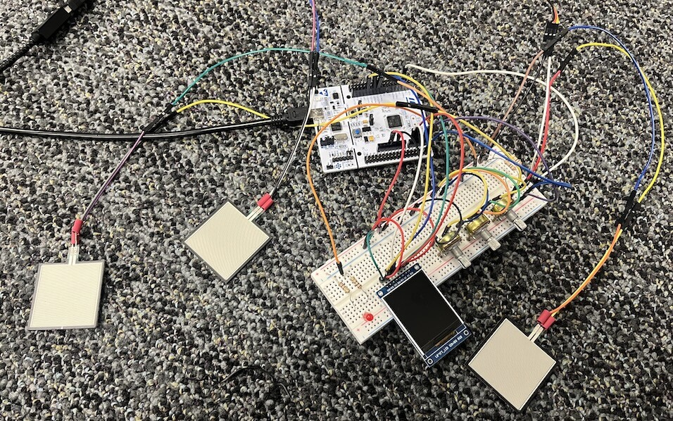
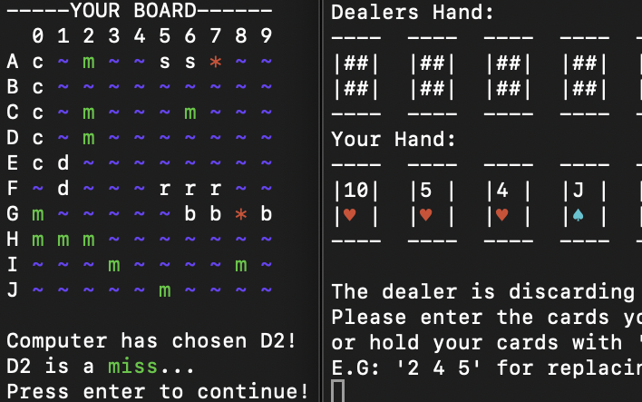

Personal Projects
A growing collection of engineering projects and other things I’ve built while learning. Each card links directly to its GitHub repository.
Project Library

Posture Monitor
A chair-based posture monitor that detects uneven sitting pressure and alerts you when you start to slouch.
Includes DMA-based sensor acquisition, interrupt-driven firmware, a custom LCD driver, and real-time pressure visualization on an STM32 microcontroller.
View on GitHub →The Shopkeeper Game
A terminal-based C# RPG inspired by Oregon Trail, where you run a shop, trade with adventurers, and try to turn a profit.
Includes object-oriented character/item systems, randomized trade encounters, inventory management, and terminal dialogue animations.
View on GitHub →
C Terminal Games
A collection of classic board games rebuilt in C, including Craps, Yahtzee, Battleship, and Hold’em Poker.
Includes input validation, turn-based gameplay, card/deck logic, hand evaluation, and simple computer AI.
View on GitHub →